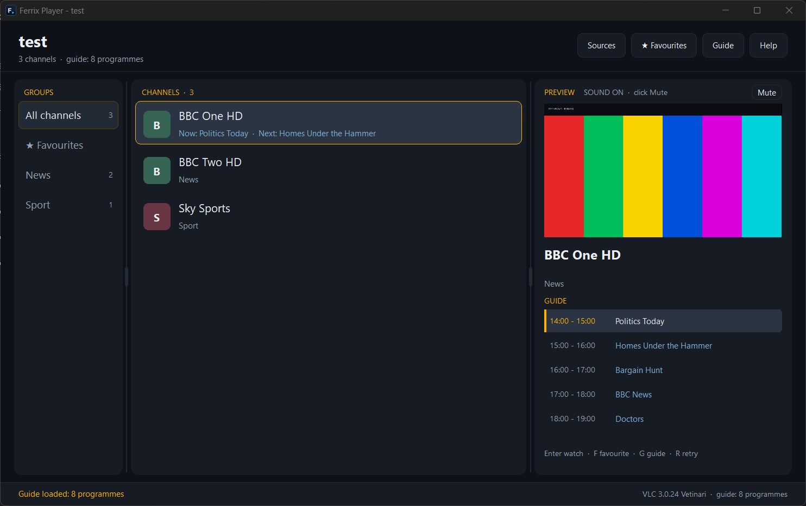

▤
M3U & Xtream
Import a playlist with the native file picker, or sign in to an Xtream Codes account. Channels and groups are cached locally.
Windows 10 / 11 · 64-bit
Ferrix Player is a fast, native Windows IPTV player. Bring your own M3U playlist or Xtream account, add an XMLTV guide, and watch in a clean, keyboard-friendly interface — with the video preview, channel guide and player all in one window.
Portable ZIP · no installer · requires VLC 3.x (64-bit) for playback.

Features
Designed for a desktop or TV screen, with the controls where you expect them.
Import a playlist with the native file picker, or sign in to an Xtream Codes account. Channels and groups are cached locally.
See the highlighted channel before you commit. The preview starts muted — unmute with the header button or press M.
Now/next in the channel list, a compact guide underneath the preview, and a full programme screen. HTTP, local files and gzip are supported.
VLC-powered playback inside the same window — no second player window. Press F11 for fullscreen and Esc to go back.
Star the channels you actually watch, then filter to Favourites. Preferences are remembered between launches.
Drag the dividers between Groups, Channels and Preview to make room for what matters. Double-click a divider to reset.
A full keyboard and mouse guide (help.png) is one click away — or press F1 from any screen.
Arrow keys, Enter, F, G, M and Esc cover the whole app. A remote-friendly layout for a TV PC.
Screenshots
Test stream and demo sources — your own channels take their place.
Download
A portable folder — unzip and run. The bundle contains the player, its icon, the help image and a quick-start readme. No installer, no background service.
Advanced: the bare .exe works, but keep app.ico and
help.png beside it for the icon and in-app Help.
Setup
You bring the playlist and guide; Ferrix Player does the rest.
Extract the ZIP somewhere you can write, such as Documents or a folder on your Desktop. Keep the files together.
Ferrix Player uses the VLC engine already on your PC. Install VLC 3.x, 64-bit if it isn’t there. The app finds it automatically.
Run FerrixPlayer.exe, open Sources, import an M3U or sign in to Xtream, then paste your XMLTV guide URL. Pick a channel and press Enter.
Controls
Everything has a shortcut, so a remote or keyboard is enough.
FAQ
%APPDATA%\FerrixPlayer. If that folder is not writable, it falls back to a data folder beside the executable. Settings, the guide cache and xtream-logins.txt stay on your PC; there is no account or telemetry.http://server:port/xmltv.php?username=…&password=…; otherwise check the provider’s account page or the url-tvg field at the top of your M3U. Paste it into Sources → XMLTV guide.